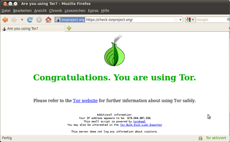

Installation
Dieser Artikel wurde für die folgenden Ubuntu-Versionen getestet:
Ubuntu 16.04 Xenial Xerus
Ubuntu 14.04 Trusty Tahr
Zum Verständnis dieses Artikels sind folgende Seiten hilfreich:
Es gibt mehrere Varianten, Tor zu installieren bzw. zu verwenden. Dieser Artikel bietet einen Überblick mit Kurzanleitungen. Tor selbst sollte auf Anraten seiner Entwickler nicht aus den offiziellen Paketquellen von Ubuntu installiert werden, da das Programm der Sektion universe zugeordnet ist und daher keine aktuellen Stabilitäts- und Sicherheitsaktualisierungen erhält.
Varianten¶
| Übersicht der Vor- und Nachteile | ||
| Variante | Vorteile | Nachteile |
| Tor-Browser-Bundle (Webdownload) | - Keine Installation - Auch zum Mitnehmen z.B. auf USB-Sticks geeignet - In sich gut abgestimmt - Sehr sicher, hoher Grad an Anonymität | - Anonymisierung beschränkt auf integrierten Browser (Firefox ESR) - Einschränkung der Funktionalitäten des Browsers bei Beibehaltung der Standard-Einstellungen (empfohlen) |
| Tor-Browser-Bundle (PPA) | - Zeitnahe Aktualisierungen von Tor - In sich gut abgestimmt - Sehr sicher, hoher Grad an Anonymität. Programmstarter ermöglicht einfachen Aufruf. | Anonymisierung beschränkt auf integrierten Browser(Firefox ESR). Einschränkung der Funktionalitäten des Browsers bei Beibehaltung der Standard-Einstellungen (empfohlen). Unterstützte Sprache ist englisch. Nach einem "sudo apt update && sudo apt dist-upgrade" sollte das PPA wieder deaktiviert werden, da sonst alle selbst vorgenommenen Einstellungen nach einem Update des Tor-Browsers durch das PPA verloren gehen. |
| Virtuelle Maschinen mit Whonix (TorBox) | - Maximale Anonymisierung und Sicherheit - Sämtlicher Internetverkehr in Tor Workstation wird automatisch durch Tor geleitet - Es ist möglich, selbst Hidden Services sicher anzubieten | - Keine Absicherung außerhalb der virtuellen Maschine - Internetprogramme auf Basis von UDP oder IPv6 haben keinen Internetzugang |
| TAILS Live System | - Sehr gut gesicherte, anonyme Internetumgebung - Kann als Live-CD oder Live-USB genutzt werden - Tragbar, kann von jedem über CD, DVD oder USB bootfähigem Computer gestartet werden - Hinterlässt keine Spuren auf dem Rechner | - Keine Integration ins System |
| Privatix Live System | - Gut gesicherte, anonyme Arbeitsumgebung - Verschlüsselung von gespeicherten Daten, gut geeignet für USB-Sticks und externe Festplatten - Tragbar, kann von jedem über CD, DVD oder USB bootfähigem Computer gestartet werden - Hinterlässt keine Spuren auf dem Rechner | - Browser ist nicht so gut anonymisiert wie z.B. beim Tor-Browser-Bundle, Tracking ist möglich - Keine Integration ins System |

Torbrowser-Launcher¶
Die einfachste Möglichkeit ist seit 16.04 die Installation des Pakets torbrowser-launcher aus den offiziellen Paketquellen. Anschließend findet man einen Installationsassistenten im Menü unter "Internet". Nach dem Erstaufruf installiert er selbständig die passende Version.
torbrowser-launcher (universe)
 mit apturl
mit apturl
Paketliste zum Kopieren:
sudo apt-get install torbrowser-launcher
sudo aptitude install torbrowser-launcher
Wenn der Launcher nach dem Download meckert, dass die Signatur nicht überprüft werden kann, hilft es, den Schlüsselbestand zu aktualisieren:
gpg --homedir "$HOME/.local/share/torbrowser/gnupg_homedir/" --refresh-keys --keyserver pool.sks-keyservers.net
Zur Nutzung von Webmail siehe auch Problembehebung.
Tor-Browser-Bundle Webdownload¶
Das Tor-Browser-Bundle  (TBB) ist die Variante, die von den Tor-Entwicklern empfohlen wird (Gründe ). Das Tor-Browser-Bundle ist ein in sich stimmiges, geschlossenes Programmpaket mit den Elementen:
(TBB) ist die Variante, die von den Tor-Entwicklern empfohlen wird (Gründe ). Das Tor-Browser-Bundle ist ein in sich stimmiges, geschlossenes Programmpaket mit den Elementen:
Firefox ESR (Langzeitversion des Browsers)
Torbutton
und anderen angepassten Addons
Für Staaten, in denen SSL-Verschlüsselung unterdrückt wird, gibt es das Tor-Browser-Bundle mit obfsproxy  . Damit wird die Nutzung von Tor u.U. auch von dort aus möglich.
. Damit wird die Nutzung von Tor u.U. auch von dort aus möglich.
TBB kann von der Projektseite in einer beliebigen Sprache und für die passende Systemarchitektur heruntergeladen werden. Ein sinnvoller Installationsort zum Entpacken [1] ist das Homeverzeichnis. Zum komfortablen Starten kann z.B. ein Starter auf dem Desktop angelegt werden. Das Tor-Browser-Bundle ist nach dem Entpacken sofort einsatzbereit; u.U. muss die Datei start-tor-browser ausführbar gemacht werden. Dafür wechselt man in das beim Entpacken entstandene Verzeichnis und gibt den folgenden Befehl in einem Terminalfenster [2] ein:
sudo chmod +x start-tor-browser
Achtung!
* Eine Internet-Nutzung außerhalb des TBB wird nicht anonymisiert. Ein als Standard installierter Firefox kann gleichzeitig gestartet werden, das Tor-Netzwerk wird nicht genutzt.
Das TBB greift nicht auf Einstellungen eines als Standard installierten Firefox zu.
Das TBB benötigt ab Version 3.5.x kein Vidalia mehr. Stattdessen ist der "TorLauncher" als Addon integriert.
Tor-Browser-Bundle PPA¶
Hinweis:
Seit TBB 4.0.2 ist eine Update-Funktion integriert, die den "Tor Browser" aktualisiert. Eigene Einstellungen bleiben dabei erhalten. Die Nutzung eines PPAs ist daher nicht mehr nötig. Tipp: Tor wie beschrieben über das PPA installieren. Anschließend dieses PPA wieder deaktivieren(s.o.). Damit erhält man einen englischsprachigen Tor Browser, der unter /opt installiert ist und sich über "Help -> About Tor Browser" updaten lässt.
Eine Alternative zum Webdownload bietet das Webupd8-Team mit einem eigenen PPA [3], das unterhalb von /opt installiert wird. Bitte vor der Nutzung kontrollieren, ob die jeweils aktuellste Version angeboten wird. Ansonsten bitte auf die Nutzung des PPAs verzichten.
Adresszeile zum Hinzufügen des PPAs:
ppa:webupd8team/tor-browser
Hinweis!
Zusätzliche Fremdquellen können das System gefährden.
Ein PPA unterstützt nicht zwangsläufig alle Ubuntu-Versionen. Weitere Informationen sind der  PPA-Beschreibung des Eigentümers/Teams webupd8team zu entnehmen.
PPA-Beschreibung des Eigentümers/Teams webupd8team zu entnehmen.
Damit Pakete aus dem PPA genutzt werden können, müssen die Paketquellen neu eingelesen werden.
Nach der Aktualisierung der Paketquellen kann folgendes Paket installiert [4] werden:
tor-browser (ppa)
mit apturl
Paketliste zum Kopieren:
sudo apt-get install tor-browser
sudo aptitude install tor-browser
Nach der Installation steht Tor im Anwendungsmenü sofort zur Verfügung.
Virtuelle Maschinen mit Whonix¶
Whonix (früher TorBOX) ist ein inoffizielles Projekt der Tor-Community. Die zu Whonix gehörigen beiden virtuellen Maschinen für VirtualBox können über SourceForge heruntergeladen werden (alternativ stehen auch Torrent-Quellen zur Verfügung, die u.a. schneller und einfacher herunterladbar sind; siehe unten). Die Dateinamen lauten:
Whonix-Workstation-7.ova (ca. 1,4 GiB)
Whonix-Gateway-7.ova (ca. 1,3 GiB)
Die Entwickler empfehlen dringend, beide Dateien vor der Verwendung auf ihre Integrität zu prüfen. Entsprechende Prüfsummen sind der offiziellen Downloadseite zu entnehmen, die auch Torrents anbietet.
Sie werden in VirtualBox importiert (dabei MAC-Adressen der Netzwerkkarten beibehalten!). Zum Betreiben werden beide VMs gestartet (Whonix Gateway zuerst). In der Whonix-Workstation kann gearbeitet und gesurft werden, sämtliche Internetverbindungen gehen über das Whonix-Gateway, das als Server für den Internetzugang dient. Eine darüber hinausgehende Konfiguration ist nicht erforderlich.
Nach dem Importieren der beiden Dateien in Virtualbox entstehen zwei .vmdk-Dateien mit jeweils ca. 3 GiB. Wenn man die enthaltenen Debian-Systeme mit KDE-Oberfläche auf den neuesten Stand bringt, wächst der insgesamt benötigte Festplattenplatz auf 10 und mehr GiB an. Der RAM-Bedarf hält sich dagegen in Grenzen und beträgt ca. 1 GiB.
TAILS Live System¶
TAILS 
 (The Amnesic Incognito Live System) ist ein offizielles Tor-Projekt. Es ermöglicht sehr sicheren anonymen Internetzugang für jeden über CD, DVD oder USB bootfähigen Rechner (z.B. auch in einer virtuellen Maschine). Sämtliche Internetverbindungen dieses Systems gehen durch das Tor-Netzwerk. Gespeicherte Daten können verschlüsselt werden. Als Basis wird Debian verwendet.
(The Amnesic Incognito Live System) ist ein offizielles Tor-Projekt. Es ermöglicht sehr sicheren anonymen Internetzugang für jeden über CD, DVD oder USB bootfähigen Rechner (z.B. auch in einer virtuellen Maschine). Sämtliche Internetverbindungen dieses Systems gehen durch das Tor-Netzwerk. Gespeicherte Daten können verschlüsselt werden. Als Basis wird Debian verwendet.
Privatix Live System¶
Das Privatix Live System ist eine freie mobile und verschlüsselte Arbeitsumgebung für USB-Sticks, DVDs oder externe Festplatten. Es ermöglicht das sichere Bearbeiten und Mitführen sensibler Daten, verschlüsselte Kommunikation und anonymes Surfen im Internet. Zur Auswahl stehen ein GNOME-2- oder ein Xfce-Desktop auf Basis von Debian. Neben Standardanwendungen wie z.B. Browser, E-Mail-Programm, Textverarbeitung und Bildbetrachter sind zahlreiche Datenschutz- und Verschlüsselungsprogramme eingebunden. Bei Verlust des Datenträgers sind alle Daten verschlüsselt und nur über das Passwort erreichbar.
Fremdquelle¶
Die Tor-Entwickler bieten eine Fremdquelle für Debian und Ubuntu an. Dieser Weg wird nur Fortgeschrittenen empfohlen, die in der Lage sind, Tor manuell korrekt zu konfigurieren.
Um aus der Fremdquelle zu installieren, muss man die folgenden Paketquellen freischalten:
Hinweis!
Zusätzliche Fremdquellen können das System gefährden.
deb http://deb.torproject.org/torproject.org VERSION main
Um die Fremdquelle zu authentifizieren, kann man den Signierungsschlüssel mit folgendem Befehl importieren:
sudo apt-key adv --recv-keys --keyserver keyserver.ubuntu.com 886DDD89
Nach dem Aktualisieren der Paketquellen wird zuerst folgendes Paket installiert [4]:
deb.torproject.org-keyring (zur Authentifizierung der Fremdquelle)
mit apturl
Paketliste zum Kopieren:
sudo apt-get install deb.torproject.org-keyring
sudo aptitude install deb.torproject.org-keyring
Anschließend folgt Tor selbst:
tor
mit apturl
Paketliste zum Kopieren:
sudo apt-get install tor
sudo aptitude install tor
Um nun das eigene System für die Verwendung von Tor zu konfigurieren, sei auf die Anleitungen
Step Two: Configure your applications to use Tor und Tor/Programme zur Nutzung von Tor konfigurieren verwiesen.
Problembehebung¶
Programmstarter für das TBB¶
Immer wieder nachgefragt: ein Programmstarter für das Tor-Browser-Bundle (TBB). Dazu erstellt man die Datei ~/.local/share/applications/tbb.desktop mit einem Editor [5] und füllt diese mit folgendem Inhalt:
[Desktop Entry] Name=Tor Browser Comment[de]=Anonym Surfen Exec=/home/BENUTZERNAME/tor-browser_de/start-tor-browser Icon=/home/BENUTZERNAME/tor-browser_de/Browser/browser/icons/mozicon128.png Type=Application Terminal=false StartupNotify=true Categories=Network;
Je nach Desktop-Umgebung bitte beachten, dass die .desktop-Datei ausführbar sein muss. Die Datei start-tor-browser muss dagegen unabhängig von der Desktop-Umgebung ausführbar sein.
Webmail¶
Nutzer des Mail-Providers mailbox.org , die den Service über das Torbrowser-Bundle nutzen möchten, bearbeiten die Datei /home/BENUTZERNAME/.local/share/torbrowser/tbb/i686/tor-browser_de/Browser/TorBrowser/Data/Tor/torrc (i686 bitte anpassen) und fügen am Ende zwei Zeilen an:
MapAddress mailbox.org mailbox.org.85D4088148B1A6954C9BFFFCA010E85E0AA88FF0.exit MapAddress *.mailbox.org *.mailbox.org.85D4088148B1A6954C9BFFFCA010E85E0AA88FF0.exit
 Übersichtsartikel
Übersichtsartikel- Erstellt mit Inyoka
-
 2004 – 2017 ubuntuusers.de • Einige Rechte vorbehalten
2004 – 2017 ubuntuusers.de • Einige Rechte vorbehalten
Lizenz • Kontakt • Datenschutz • Impressum • Serverstatus -
Serverhousing gespendet von